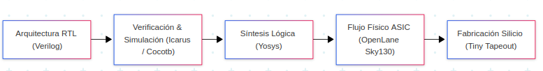

Documentación del Proyecto SoC VLSI — Tiny Tapeout FemtoRV32
Bienvenido al portal de documentación del SoC VLSI Tiny Tapeout, un proyecto de diseño e implementación de un microprocesador basado en la arquitectura de código abierto RISC-V (RV32I), diseñado para fabricación en tecnología de 130 nm (SkyWater SKY130) mediante la plataforma Tiny Tapeout.

Estructura de la Guía
La documentación está dividida en módulos temáticos para facilitar su consulta y lectura:
- Herramientas: Requisitos de software, dependencias y guías de instalación de herramientas de código abierto (Yosys, Icarus Verilog, GTKWave, Cocotb, OpenLane).
- Guía de Usuario:
- Introducción: Arquitectura general, desglose de archivos del repositorio
VLSI, mapa de memoria y consideraciones críticas del chip. - Simulación: Compilación de programas en ensamblador, firmware (normal vs. shifted), pruebas automatizadas con Cocotb e inspección de formas de onda en GTKWave.
- Síntesis: Flujo de síntesis con Yosys, librería de celdas estándar Sky130 y presupuesto de área por baldosas de Tiny Tapeout.
- Flujo Físico: Implementación física RTL-to-GDSII con OpenLane, extracción SPICE en Magic, comprobación DRC/LVS y generación de GDSII.
- Introducción: Arquitectura general, desglose de archivos del repositorio
Características Principales del Chip
| Característica | Especificación |
|---|---|
| Núcleo CPU | FemtoRV32 Quark (Arquitectura RISC-V RV32I de 32 bits) |
| Frecuencia Nominal | 27 MHz |
| Tecnología de Fabricación | SkyWater 130 nm CMOS (PDK sky130A) |
| Plataforma Tapeout | Tiny Tapeout (Proyecto tt_um_femto, corrida SKY25b) |
| Memoria de Datos | Memoria externa RAM SPI + memoria RAM estática síncrona interna |
| Periféricos Integrados | UART (TX/RX serie a 115200 baudios), Multiplicador por hardware de 32 bits, GPIO/LEDs |
| Entorno de Pruebas | Uso de cocotb y GTKWave |